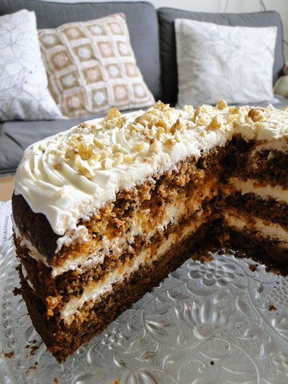

Mrkvový dort

Čas přípravy: 20 minut
Čas pečení: 60 minut
Celkový čas: 1,5 hodiny + chlazení
Suroviny
KORPUS
• 4 vejce
• 300 g třtinového cukru
• 280 g polohrubé pšeničné mouky
• 2 čajové lžičky jedlé soda
• 2 čajové lžičky kypřícího prášku do pečiva
• ½ čajové lžičky soli
• 2 čajové lžičky mleté skořice
• 200 ml rostlinného oleje
• 500 g mrkve nahrubo nastrouhané (650 g syrové mrkve –
očisti, nastrouhej na hrubém struhadle, vymačkej šťávu)
• 200 g nasekaných vlašských ořechů + extra na ozdobu
KRÉM
• 500 g krémového sýra (např. Lučina nebo
Philadelphia)
• 120 g moučkového cukru
• 140 g měkkého másla
• Šťáva z 1 citronu
Postup
Předehřej troubu na 180 °C. Formu 26 cm vylož pečicím papírem. Do čisté mísy prosej mouku, jedlou sodu, kypřicí prášek, sůl a skořici. Vejce rozklepni a přidej cukr do jiné mísy a šlehej do pěny (mixérem nebo ručním šlehačem, cca 3–5 minut). Postupně zašlehej olej. Do mísy vmíchej nastrouhanou mrkev a nasekané ořechy. Poté postupně přidej suchou směs a promíchej lopatkou (nešlehej, aby těsto zůstalo nadýchané). Těsto nalij do formy a uhlaď povrch. Peč 50–60 minut, dokud špejle zapíchnutá do středu nevyjde suchá. Nech ve formě vychladnout. Vyndej korpus z formy a nech ho vychladnout. Měkké máslo promíchej s krémovým sýrem, moučkovým cukrem a citronovou šťávou do hladka. Po vychladnutí jednou prokroj. Spodní část potři ⅓ krému, přiklop vrchní díl a potři zbytkem krému včetně boků. Nech v lednici minimálně 1 hodinu ztuhnout.

Článek zpracovala: Žaneta Hrdá
Březen 2026ZDROJE